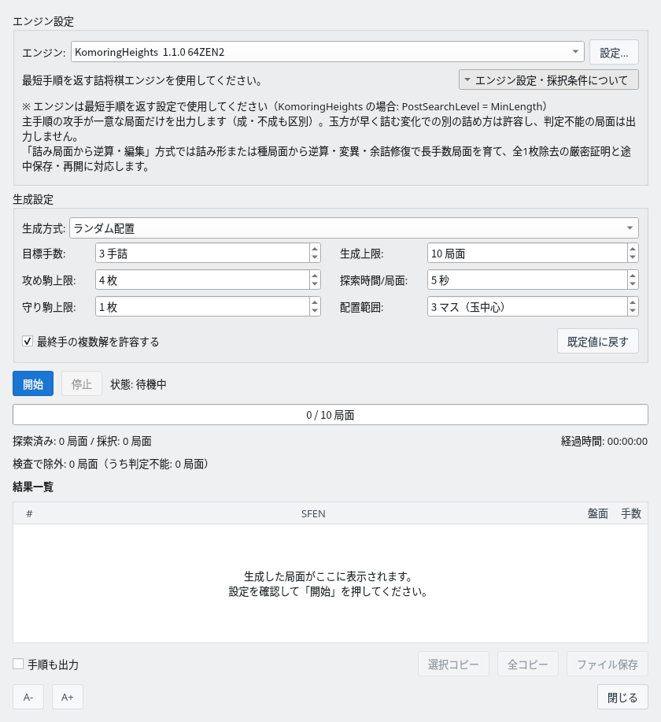
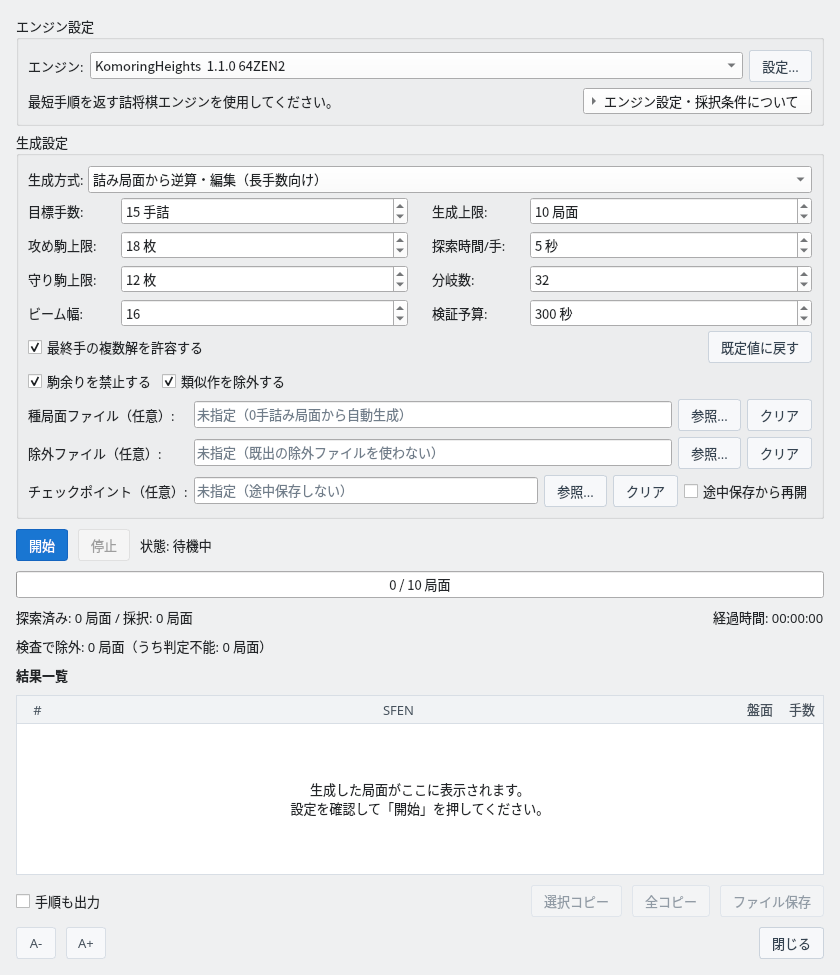
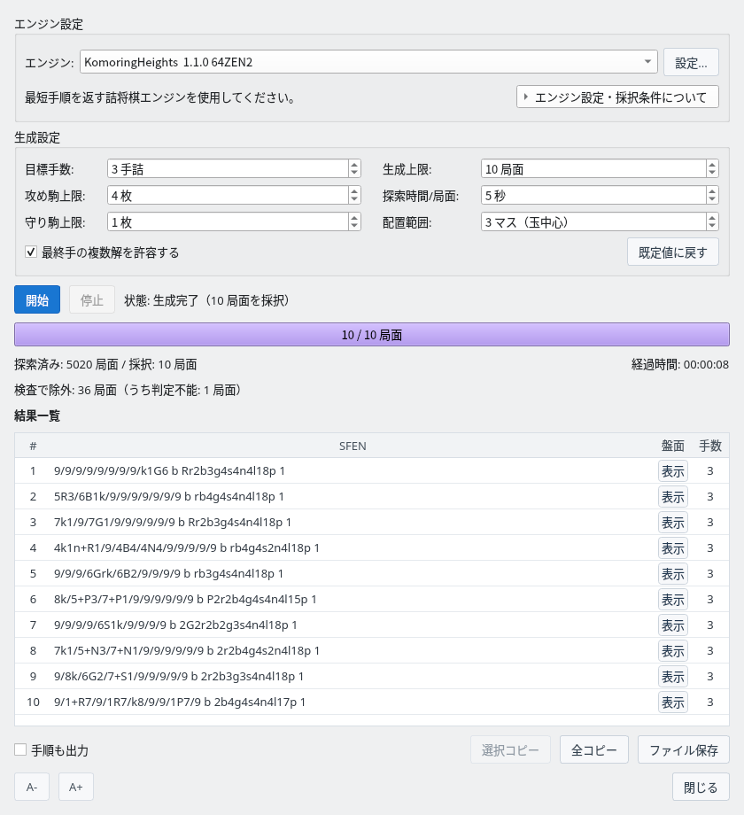
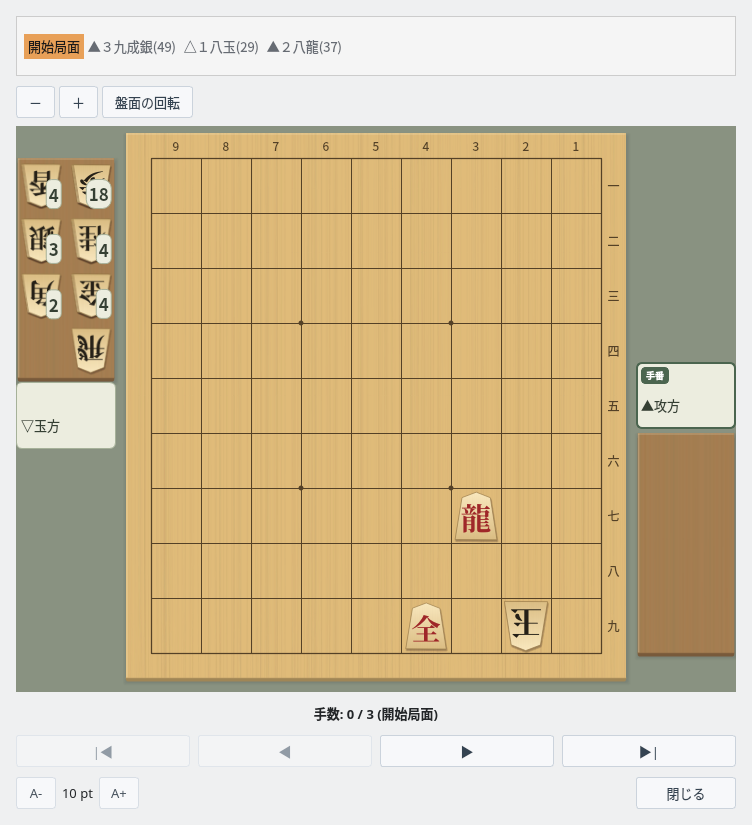

詰将棋局面生成
短手数のランダム配置から、逆算・編集による長手数詰将棋までUSIエンジンで自動生成
概要
短手数向けのランダム配置と長手数向けの逆算・編集の2方式で、詰み・余詰・不要駒を検査して出力します
機能の特徴
詰将棋局面生成は、次の処理を自動で行います。
- 短手数向けの「ランダム配置」と、15手以上の長手数（最大301手）に対応する「詰み局面から逆算・編集（長手数向け）」の2方式を切り替え可能
- ランダム配置では内蔵の詰み探索で候補を選別し、逆算・編集では詰み形または種局面から逆算・盤面変異・余詰修復で局面を成長させ、USIエンジン（
go mate）で指定手数の詰みを確認 - 主手順の余詰、不要駒（全1枚除去）、および逆算・編集モードでの駒余り禁止・類似作除外を検査し、条件を満たした局面だけを出力
- 逆算・編集モードでは探索状態と検証キャッシュのチェックポイント途中保存・再開に対応
- 結果をSFEN形式で一覧表示し、ファイル保存やクリップボードへのコピーが可能
詰み探索には、komori-n氏が開発・公開している詰将棋エンジンKomoringHeightsを利用できます。エンジンを別途用意して「設定」→「エンジン設定…」で登録し（エンジン登録のガイド）、生成ダイアログの「エンジン」で選択してください。最短手順を返す設定（KomoringHeightsでは PostSearchLevel = MinLength。既定値）で使います。
局面生成の設定
生成ダイアログで方式と条件を設定して、生成を開始します
詰将棋局面生成ダイアログ
「対局」→「詰将棋局面生成…」でダイアログを開き、エンジン・生成方式・生成設定を確認して「開始」をクリックします。設定は次回も使われます。

詰将棋局面生成ダイアログ：「ランダム配置」で「エンジン設定・採択条件について」を開いたところ
| 項目 | 内容 |
|---|---|
| エンジン | 詰み探索に使うUSIエンジンです。「設定...」で選んだエンジンのオプションを変更できます。 |
| 生成方式 | 「ランダム配置」（短手数向け）または「詰み局面から逆算・編集（長手数向け）」を選びます。既定値は「ランダム配置」です。 |
| 目標手数 | 生成する詰将棋の手数（1〜301の奇数）。既定値は3手詰です。15手以上の長手数は逆算・編集方式の利用をおすすめします。 |
| 攻め駒上限 | 攻方の盤上の駒と持駒の合計枚数の上限。ランダム配置では1〜10枚（既定4枚）、逆算・編集では1〜38枚（既定18枚）です。 |
| 守り駒上限 | 玉を除く、玉方の盤上の駒の枚数の上限。ランダム配置では0〜10枚（既定1枚）、逆算・編集では0〜38枚（既定12枚）です。 |
| 生成上限 | 採択した局面がこの件数に達すると終了します（0〜10000局面）。既定値は10局面で、0（無制限）にすると停止するまで生成を続けます。 |
| 探索時間/局面 | ランダム配置で、候補・駒除去後の詰み探索と、それぞれの余詰検査全体に使う時間（1〜300秒、既定5秒）。時間内に検査を終えられない局面は採択しません。逆算・編集では「探索時間/手」に切り替わります。 |
| 配置範囲 | ランダム配置で、玉を中心に攻め駒を置く範囲（1〜8マス）。既定値は3マスです。 |
| 最終手の複数解を許容する | オンにすると、主手順の最終手に複数の詰手があっても採択します（1手詰の初手は除く）。オフにすると最終手も一意な局面だけを出力します。初手など主手順の途中の余詰は常に除外します。 |
| 既定値に戻す | 生成設定を既定値に戻します。 |
「エンジン設定・採択条件について」をクリックすると、エンジンの設定と採択条件の説明を開閉できます。
生成中は「停止」で止められます。停止しても、採択済みの局面は保存・コピーできます。
ランダム局面生成のしくみ
「ランダム配置」方式では、局面は次の手順で自動的に作られます。
- 後手の玉を9×9の盤面のランダムな位置に配置
- 攻め駒を玉の周辺に配置（盤上または持駒としてランダムに振り分け）
- 守り駒を玉の周辺に配置
- 攻方の玉を省略し、その他の未使用駒はすべて玉方（後手）の持駒に追加
- 初期局面で王手がかかっていないことを確認
作られた局面はまず内蔵の詰み探索で選別され、目標手数で詰まないと分かった局面や、詰む初手が複数見つかった局面を除外します。内蔵探索で判定できなかった候補もUSIエンジンに送り、エンジンが指定手数の詰みを確認した局面だけが余詰検査に進みます。「探索済み」の局面数には、内蔵探索で除外した局面も含まれます。
詰み局面から逆算・編集（長手数向け）
15手以上の長手数詰将棋を作りたい場合や、長時間の探索を途中保存しながら進めたい場合は、「生成方式」で「詰み局面から逆算・編集（長手数向け）」を選びます。

逆算・編集モードの設定画面（15手詰の例）
| 専用項目 | 内容 |
|---|---|
| ビーム幅 | 各手数層に保持する有望局面の最大数（1〜2000、既定16）。大きいほど多様な局面を保ちやすくなります。 |
| 探索時間/手 | 逆算・成長フェーズで1局面を調べる上限時間（1〜300秒、既定5秒）。厳密証明・不要駒検査では最大3倍（上限60秒）まで自動延長されます。 |
| 分岐数 | 1回の展開で逆算手・盤面変異から作る候補局面数（4〜200、既定32）。 |
| 検証予算 | 1候補の厳密証明と全1枚除去トリミングに使える最大時間（5〜86400秒、既定300秒）。 |
| 駒余りを禁止する | 既定オン。全最長応手および最終手で攻方持駒が0枚になる局面だけを採択します。 |
| 類似作を除外する | 既定オン。平行移動・左右反転・中間手順1手違いなどの類似作を除外します。 |
| 種局面ファイル（任意） | 成長の出発点とするSFENファイル（1行1題の SFEN または SFEN moves …、# 行はコメントとして無視）。空欄なら0手詰み局面から自動生成します。「参照...」「クリア」で指定・解除できます。 |
| 除外ファイル（任意） | 既存の詰将棋問題集などを指定すると、収録済みの局面や類似手順を除外して新作だけを生成します（1行1題の SFEN または SFEN moves …、# 行は無視）。チェックポイント再開時にも追加適用できます。 |
| チェックポイント（任意） / 途中保存から再開 | 探索フロンティア・採択済み局面・厳密検証キャッシュを定期的にJSONファイルへ原子的保存します。停止・中断後に「途中保存から再開」をオンにして「開始」を押すと、採択済み局面を結果一覧へ復元したうえで途中から続行できます（再開オンの間は種局面ファイル欄は無効になります）。 |
逆算・編集方式では、次の流れで長手数の詰将棋を育てて証明します。
- 0手詰み局面または種局面から、玉方・攻方の逆算手と盤面変異で候補局面を展開し、多層ビームサーチで各手数層の有望局面を保持
- 候補に余詰が見つかった場合、余詰筋を塞ぐ盤面修正（標的型リペア）を試行して修復
- 目標手数に達した候補は
go mate infiniteの自然終了で最短手数を確認し、主手順全手の余詰検査・駒余り検査・全1枚除去による不要駒トリミングをすべて通過した局面だけを採択
生成結果
採択された詰将棋が一覧に追加されます
結果一覧
指定手数の詰みが見つかると、不要駒のトリミングと余詰検査を終えた局面が結果一覧に追加されます。進行状況のバーには採択数と生成上限が表示されます。ランダム配置では探索済み・採択数・経過時間・検査除外数（うち判定不能の数）を、逆算・編集モードでは候補生成数・最大到達手数・採択数・フロンティア数・修復成功数と現在のフェーズ（逆算・成長探索中／初手余詰検査中／余詰修復中／厳密証明・不要駒検査中）を表示します。

生成結果：既定の設定で3手詰を10局面採択
| 操作 | 内容 |
|---|---|
| 表示（「盤面」の列） | 読み筋表示ウィンドウで、局面と詰み手順を確認します。行のダブルクリックやEnterキーでも開けます。 |
| 手順も出力 | オンにすると、保存・コピーするSFENの後ろに moves とUSI形式の詰み手順を付けます。 |
| 選択コピー | 選択した局面をクリップボードにコピーします（Ctrl+C）。CtrlキーやShiftキーで複数選択できます。 |
| 全コピー | すべての局面をクリップボードにコピーします。 |
| ファイル保存 | テキストファイルに保存します。先頭にShogiBoardQのバージョン・生成日時・選択した方式と生成設定（逆算・編集モードではビーム幅・分岐数・検証予算・駒余り条件など）を「#」で始まるコメント行として記録します。コメント行は局面集ビューアや詰将棋対局の読み込みでは読み飛ばされます。 |
不要駒トリミング
不要駒トリミングは、生成した局面に含まれる「飾り駒」（取り除いても詰み手順に影響しない駒）を自動的に取り除く処理です。
- 盤上の攻方・玉方の駒と、攻方の持駒を1枚ずつ試しに取り除く
- 取り除いても目標手数の詰みと主手順の一意性（逆算・編集モードで有効時は駒余りなしも含む）が保たれる場合は、除去を確定
- 取り除いた駒は玉方の持駒に移し、駒の総数を保つ
- 1枚除去するたびに検査し直し、新たに不要になった駒も取り除く
- 除去後の検査が時間切れ・判定不能になった問題や、停止・エラーでトリミングが中断された問題は出力しない
ここで確認するのは「駒を1枚取り除いても同じ条件の詰将棋が成立するか」です。複数枚を同時に取り除いたり配置自体を変えたりした場合まで含めた、最少の駒数を保証するものではありません。
詰み手順の確認
生成された詰将棋の手順を盤面で確認します
読み筋表示ウィンドウ
結果一覧の「表示」をクリックすると、読み筋表示ウィンドウが開きます。上に詰み手順、その下に局面が表示され、攻方・玉方として盤面に並びます。「▶」で1手ずつ進め、「▶|」で詰みの局面まで進めます。操作の詳細は詰み探索の読み筋表示をご覧ください。

読み筋表示：生成した3手詰の開始局面（手数 0 / 3）
CLIで詰将棋を生成する方法
generate-tsume・grow-tsumeの準備から、途中保存・再開、Pythonによる並列実行、保存・再検証まで
CLIと詰み探索エンジンを準備する
shogiboardq-cli はGUIと共通の生成処理を使い、短手数ランダム配置の generate-tsume と、逆算・編集による長手数厳密生成の grow-tsume の2つのサブコマンドを提供します。どちらも指定手数の詰み・主手順の余詰・不要駒を検査した局面をJSON Linesで出力します。PythonからCLIを子プロセスとして直接起動でき、MCPサーバーの起動は不要です。
以下はLinuxのシェルとPython 3を使う例です。リポジトリのルートで実行してください。ソースからの準備はLinuxでのビルド手順を参照してください。WindowsなどではCLIの実行ファイル名・パスを環境に合わせて変更します。
CLIをビルドして登録済みエンジンを確認
cmake -B build -S . -DCMAKE_BUILD_TYPE=Release
cmake --build build --target shogiboardq-cli --parallel 4
./build/shogiboardq-cli list-engines先にエンジン登録で、go mate に対応したエンジンを登録します。--engine には実行ファイルのパスではなく、list-engines が返す登録名を指定します。下の名前は例なので、空白も含めて実際の登録名に置き換えてください。
KomoringHeightsを使う場合は、並列実行の開始設定として Threads=1、USI_Hash=256（多数並列や grow-tsume では 64〜128）、PostSearchLevel=MinLength、GenerateAllLegalMoves=true をエンジン設定で指定できます。対応するオプション名と値は利用するエンジンで確認してください。
generate-tsume で1バッチを生成してJSON Linesを確認する
まず generate-tsume で3手詰を最大10題生成して、エンジン設定と出力を確認します。標準出力のJSON Linesは、手順付き問題集のテキストとは別の形式です。
3手詰を最大10題生成
./build/shogiboardq-cli generate-tsume \
--engine 'KomoringHeights 1.1.0 64ZEN2' \
--target-moves 3 --max-positions 10 \
--timeout-ms 5000 --max-attack 4 --max-defend 1 \
--attack-range 3 --stdin-control > tsume-batch.jsonl| オプション | 意味・指定範囲 |
|---|---|
--target-moves | 目標手数。1～301の奇数。既定値は3 |
--max-positions | 1回の起動で生成する上限。1～10000。既定値は10 |
--timeout-ms | 候補探索・駒除去・余詰検査に使う時間予算。1000～300000ms。既定値は5000 |
--max-attack | 攻方の盤上・持駒の合計上限。1～10。既定値は4 |
--max-defend | 玉以外の玉方盤上駒の上限。0～10。既定値は1 |
--attack-range | 玉を中心とする攻め駒の配置範囲。1～8マス。既定値は3 |
--stdin-control | 標準入力の stop 行、またはEOFで停止 |
--no-final-alternatives | 最終手の複数解も不採択にする（正式名 --no-allow-final-move-alternatives）。省略時は最終手の複数解を許容 |
--no-remaining-to-hand | 未使用駒を玉方持駒へ回さない。通常の詰将棋では省略する |
started は設定、progress は生成・発見・除外・判定不能の件数、position は採択された局面、finished は終了を表します。保存する局面と手順は position.sfen と position.pv（USI指し手の配列）から取り出します。error とプロセスの終了コードも確認します。
positionイベントの主要フィールド
{"event":"position","sfen":"9/8k/7P1/9/7R1/9/9/9/9 b r2b4g4s4n4l17p 1","pv":["2c2b+","1b1c","2e2c+"]}--stdin-control を付けた場合は、端末で stop と入力してEnterを押すと停止します。標準入力を閉じても停止するため、Pythonでは stdin=PIPE を開いたまま保持します。入力を最初から閉じる実行環境では、生成がすぐに終了することがあります。
grow-tsume で長手数詰将棋を生成・再開する
15手〜301手の長手数詰将棋を厳密基準（全主手順一意・最終手も一意・駒余りなし・全1枚除去の不要駒ゼロ・go mate infinite の自然終了）で生成する場合は grow-tsume を使います。ファイルパスを指定するオプションはすべて絶対パスで渡します。
15手詰を生成し、チェックポイントと結果をファイルに保存
./build/shogiboardq-cli grow-tsume \
--engine 'KomoringHeights 1.1.0 64ZEN2' \
--target-moves 15 --max-positions 5 \
--beam-width 16 --branch-factor 32 \
--max-attack 18 --max-defend 12 \
--step-timeout-ms 5000 --verify-query-timeout-ms 15000 \
--verify-budget-seconds 300 --hash-mb 64 --threads 1 \
--checkpoint "$PWD/tsume-work/grow15.ckpt.json" \
--output "$PWD/tsume-work/grow15.txt" \
--stdin-control > tsume-work/grow15.jsonl中断したチェックポイントから再開
./build/shogiboardq-cli grow-tsume \
--engine 'KomoringHeights 1.1.0 64ZEN2' \
--checkpoint "$PWD/tsume-work/grow15.ckpt.json" --resume \
--output "$PWD/tsume-work/grow15.txt" \
--hash-mb 64 --threads 1 --stdin-control >> tsume-work/grow15.jsonl| オプション | 意味・指定範囲 |
|---|---|
--target-moves | 目標手数。1～301の奇数。既定値は101 |
--max-positions | 採択する上限。1～1000。既定値は1 |
--beam-width / --branch-factor | 各手数層のビーム幅（1～2000、既定12）と1展開の分岐数（4～200、既定24） |
--max-attack / --max-defend | 攻方駒上限（1～38、既定20）と玉以外の玉方盤上駒上限（0～38、既定14）。盤上総駒数は --max-total-board-pieces（2～39、既定30） |
--step-timeout-ms | 成長探索の1問い合わせ上限。100～600000ms。既定値は5000 |
--verify-query-timeout-ms / --verify-budget-seconds | 厳密検証・不要駒検査の1問い合わせ上限（500～600000ms、既定15000）と1候補の総予算（5～86400秒、既定1800） |
--hash-mb / --threads | エンジンの USI_Hash（0～65536MiB）と Threads（0～256）を上書き。0は登録設定をそのまま使用 |
--seed-sfen / --seed-file | 成長の種とするSFENまたは種局面ファイル（絶対パス、SFEN / SFEN moves … 対応）。省略時は0手詰み局面から自動生成 |
--exclude-file / --no-exclude-similar | 重複・類似作を除外するための既存問題ファイル（絶対パス）。--no-exclude-similar で類似作除外を無効化 |
--checkpoint / --resume / --checkpoint-interval-seconds | チェックポイントJSONの保存先（絶対パス）、再開フラグ、自動保存間隔（5～3600秒、既定30） |
--output | 採択された局面を SFEN moves … 形式で追記保存するファイル（絶対パス） |
--allow-final-move-alternatives / --no-require-no-surplus / --no-strict-min-length | 厳密基準を緩和するオプション。既定では最終手も一意・駒余り禁止・go mate infinite の自然終了を要求 |
--stdin-control | stop 行またはEOFで停止。実行中に exclude <SFEN moves …> や seed <SFEN> を送って他ワーカーの採択結果を動的同期可能 |
15〜31手詰などの問題集を複数ワーカーでまとめて収集する場合は、ソースに含まれる scripts/generate_long_tsume_collections.py を利用できます。全ワーカー共通の類似作フィルタ、標準入力経由のリアルタイム同期、使用済み親種の自動除外、1題ごとのJSONL即時保存・再開に対応しています。
複数手数の長手数問題集を並列生成・再開（同梱スクリプト）
python3 scripts/generate_long_tsume_collections.py \
--engine /path/to/KomoringHeights-by-gcc \
--work-dir tsume-work/long-run \
--publish-dir tsume-work/published \
--plies 15 17 19 --count 100 --workers 4 --hash-mb 64Pythonから並列実行し、途中結果を保存する
短手数の generate-tsume をPythonから並列実行する最小例です。以下を generate_tsume_parallel.py として保存し、リポジトリのルートで python3 generate_tsume_parallel.py を実行します。追加のPythonパッケージは不要です。最初は TARGET=10・WORKERS=1 で確認し、CPU・メモリに余裕があれば並列数を増やしてください。
PLIES は手数、TARGET は全ワーカー合計の収集目標、WORKERS は同時起動数です。TIMEOUT_MS・駒数・配置範囲も冒頭で変更できます。各バッチの件数を区切りながら、目標に達するまで繰り返し収集します。
Pythonコードを表示（3手詰を4並列で100題収集）
generate_tsume_parallel.py
import asyncio
import json
import os
from pathlib import Path
CLI = str(Path("build/shogiboardq-cli").resolve())
ENGINE = "KomoringHeights 1.1.0 64ZEN2" # Use the exact name from list-engines
PLIES = 3
TARGET = 100
WORKERS = 4
TIMEOUT_MS = 5000
MAX_ATTACK = 4
MAX_DEFEND = 1
ATTACK_RANGE = 3
ALLOW_FINAL_ALTERNATIVES = True
OUTPUT = Path(f"tsume-work/tsume_{PLIES}ply_candidates.txt")
ENV = dict(os.environ)
# Optional: use a separately prepared configuration on Linux
# ENV["XDG_CONFIG_HOME"] = "/path/to/tsume-config"
positions = {}
active = set()
def remember(sfen, pv):
fields = sfen.split()
if len(fields) != 4 or len(pv) != PLIES:
raise ValueError("Invalid SFEN or PV length")
key = " ".join(fields[:3]) # Board, turn, and hands; ignore the move number
if key not in positions and len(positions) < TARGET:
positions[key] = sfen + " moves " + " ".join(pv)
def checkpoint():
temporary = OUTPUT.with_suffix(".tmp")
text = "# CLI candidates (before independent collection validation)\n"
text += "\n".join(positions.values()) + "\n"
temporary.write_text(text, encoding="utf-8")
temporary.replace(OUTPUT)
async def stop(process):
if process.returncode is None:
try:
process.stdin.write(b"stop\n")
await process.stdin.drain()
except (BrokenPipeError, ConnectionResetError):
pass
async def close_process(process):
await stop(process)
try:
await asyncio.wait_for(process.wait(), timeout=15)
except asyncio.TimeoutError:
process.kill()
await process.wait()
active.discard(process)
async def worker(number):
while len(positions) < TARGET:
args = [
CLI, "generate-tsume", "--engine", ENGINE,
"--target-moves", str(PLIES),
"--max-positions", str(min(100, TARGET - len(positions))),
"--timeout-ms", str(TIMEOUT_MS),
"--max-attack", str(MAX_ATTACK), "--max-defend", str(MAX_DEFEND),
"--attack-range", str(ATTACK_RANGE), "--stdin-control",
]
if not ALLOW_FINAL_ALTERNATIVES:
args.append("--no-final-alternatives")
log_path = OUTPUT.parent / f"worker-{PLIES}ply-{number}.jsonl"
err_path = OUTPUT.parent / f"worker-{PLIES}ply-{number}.stderr.log"
with log_path.open("a", encoding="utf-8") as log, err_path.open("ab") as err:
process = await asyncio.create_subprocess_exec(
*args, env=ENV,
stdin=asyncio.subprocess.PIPE,
stdout=asyncio.subprocess.PIPE, stderr=err,
)
active.add(process)
try:
# Another worker may have reached the target during startup.
if len(positions) >= TARGET:
await stop(process)
async for raw in process.stdout:
line = raw.decode("utf-8")
log.write(line)
log.flush()
event = json.loads(line)
if event["event"] == "error":
raise RuntimeError(event["message"])
if event["event"] != "position":
continue
remember(event["sfen"], event["pv"])
checkpoint()
print(f"{len(positions)}/{TARGET}", flush=True)
if len(positions) == TARGET:
await asyncio.gather(*(stop(p) for p in list(active)))
if await process.wait() != 0:
raise RuntimeError(f"CLI failed; see {err_path}")
finally:
await close_process(process)
async def main():
if TARGET < 1 or WORKERS < 1:
raise ValueError("TARGET and WORKERS must be positive")
OUTPUT.parent.mkdir(parents=True, exist_ok=True)
if OUTPUT.exists():
for line in OUTPUT.read_text(encoding="utf-8").splitlines():
if line and not line.startswith("#"):
sfen, moves = line.split(" moves ", 1)
remember(sfen, moves.split())
tasks = [asyncio.create_task(worker(i)) for i in range(WORKERS)]
try:
await asyncio.gather(*tasks)
finally:
for task in tasks:
task.cancel()
await asyncio.gather(*tasks, return_exceptions=True)
await asyncio.gather(*(close_process(p) for p in list(active)))
checkpoint()
print(f"Collected: {OUTPUT} (validate the collection separately)")
if __name__ == "__main__":
asyncio.run(main())全ワーカー共通の辞書で、盤面・手番・持駒が同じSFENを除外します。発見のたびに一時ファイルから置換して保存し、再起動時に読み戻します。JSON Linesと標準エラーは手数・ワーカー別に残します。必要数が揃うと全CLIへ停止要求を送り、途中でCtrl+Cを押した場合も保存済みの結果から再開できます。
このコードが行うのは収集とSFENの重複排除です。駒種だけが違う同じ手順や、左右反転した類似問題までは除外しません。問題集全体の独立した監査も別に実施してください。
実行・停止・再開時の注意点
- 全体の終了時間：
--timeout-msや--verify-budget-secondsはコマンド全体の制限時間ではありません。長手数や厳しい設定では採択が少なく、目標件数までの時間は保証されません。まず少数で進捗を確認し、必要なら停止して条件を調整します。判定不能は不詰や検証成功として数えません。 - CPU・メモリ：並列数とエンジン内のスレッド数・ハッシュ容量の両方が負荷に影響します。KomoringHeightsの既定値（例：
USI_Hash=4096、Threads=4）のまま複数プロセスを起動するとメモリ不足になりやすいため、grow-tsumeでは--hash-mb 64 --threads 1のように明示指定するか、エンジン設定で事前に調整してください。 - 設定ファイル：GUIで登録したエンジンが見えない場合は、同じユーザー・同じ設定で実行しているか確認します。Linuxで
XDG_CONFIG_HOMEを変える場合は、その下のShogiBoardQ/ShogiBoardQ.iniにエンジン登録・オプションを準備し、同じ環境変数でlist-enginesとPythonを実行します。 - 再開するファイル：同じ
OUTPUTや--checkpointファイルを複数のプロセスから同時に更新しないでください。上のgenerate_tsume_parallel.pyは既存行を再検証しないため、手数・エンジン・余詰の条件を変えたら新しい出力先を使うか、既存分を再検証します。設定はstartedイベントのログでも確認できます。 - 余詰・駒余りの条件：
generate-tsumeは既定で最終手の複数解を許容します（一意にするには--no-final-alternatives）。一方、grow-tsumeは既定で最終手も一意・駒余り禁止・go mate infinite自然終了の厳密基準です。再検証でも同じ条件を揃えてください。 - 出力の区別：
tsume-batch.jsonlやgrow15.jsonlはイベントログです。問題集として使うのは--outputやPythonが出力する手順付きテキストファイルです。CLIのエラー時はワーカーのJSON Linesと標準エラーログを確認します。
手順付きテキストの形式と再検証
問題集はUTF-8で、1行を SFEN moves USI指し手… として保存します。# で始まるコメントに生成日、エンジン、手数、駒数・探索時間、余詰の条件を記録しておくと、後から確認できます。
3手詰の保存形式（1行1題）
9/8k/7P1/9/7R1/9/9/9/9 b r2b4g4s4n4l17p 1 moves 2c2b+ 1b1c 2e2c+主手順の余詰を再検査するには verify-tsume を使います（1〜301手の奇数に対応）。次は1局面の例です。複数題を再検査する場合は、収集ファイルの各SFENを順に渡します。
局面の余詰を再検査
./build/shogiboardq-cli verify-tsume \
--engine 'KomoringHeights 1.1.0 64ZEN2' \
--target-moves 3 --timeout-ms 15000 \
--sfen '9/8k/7P1/9/7R1/9/9/9/9 b r2b4g4s4n4l17p 1'JSONの ok はコマンド処理の成否です。合格として扱うには status が unique であることも確認し、unknown は保留・再試行にします。このコマンドは主手順の余詰検査であり、保存済みPVの全手や全駒の必要性を監査する処理の代わりにはなりません。
問題集を独立して監査する場合は、ソースに含まれる次のツールで最短手数・合法手順・主手順の余詰・全1枚除去を確認できます。このツールの --engine は、CLIの登録名ではなくエンジン実行ファイルのパスです。
収集ファイルを独立して監査
cmake -B build -S . -DBUILD_TESTING=ON
cmake --build build --target tsumeshogi_collection_auditor --parallel 4
python3 scripts/audit_tsume_collections.py tsume-work/tsume_3ply_candidates.txt \
--engine /path/to/KomoringHeights-by-gcc \
--output-dir tsume-work/audit-3ply --workers 4 --timeout-ms 30000summary.json の statuses・unique_minimal・changed を確認します。unknown を完成件数に含めず、予算を増やして再試行するか除外します。確認済みの結果は tsume_3ply_minimal.txt に保存されます。駒除去後の重複や類似作の除外で件数が減った場合は補充して再監査します。詳しい検査条件は問題集のREADMEを参照してください。
不要駒検査で確認するのは、採択条件を維持できる1枚除去がないことです。複数枚の同時除去や駒種変更まで含めた最少駒数は保証しません。
似た問題が続かない問題集にする
局面の検証に加え、解く手順の類似性と出題順を確認します
局面の重複だけでなく、手順の類似も確認する
SFENが異なっていても、同じ追い詰め、左右反転、配置の平行移動、金と成桂などの置換で解き方が似る場合があります。generate-tsume と上のPython例による局面の重複排除だけでは、問題集としての多様性は保証されません。
問題集編集用のツールで選別・補充する
3〜13手詰の補充には scripts/refill_diverse_tsume.py が使えます。検証済みの問題集を入力に、全ワーカー共通で手順の類似を判定して不足分を生成し、scripts/audit_tsume_collections.py で独立監査した後、scripts/publish_diverse_tsume.py で直近10題との手順の重なりを減らす順序に並べます。
15〜31手詰の長手数問題集では、grow-tsume の内蔵類似作除外と scripts/generate_long_tsume_collections.py（全ワーカー共通の類似判定と出題順の分散配置）で収集し、同様に独立監査を行って収録しています。
類似判定は主手順を使った編集基準で、変化・紛れを含む作品の価値を完全に判定するものではありません。入力条件・再開・除外・保存の手順は問題集のREADMEを参照してください。